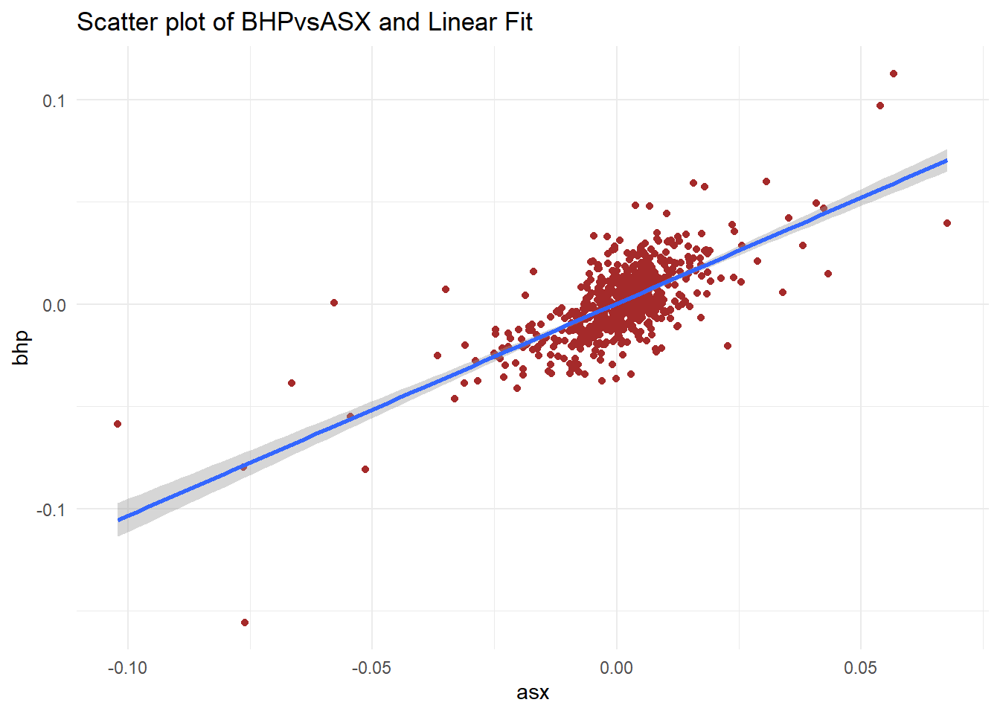
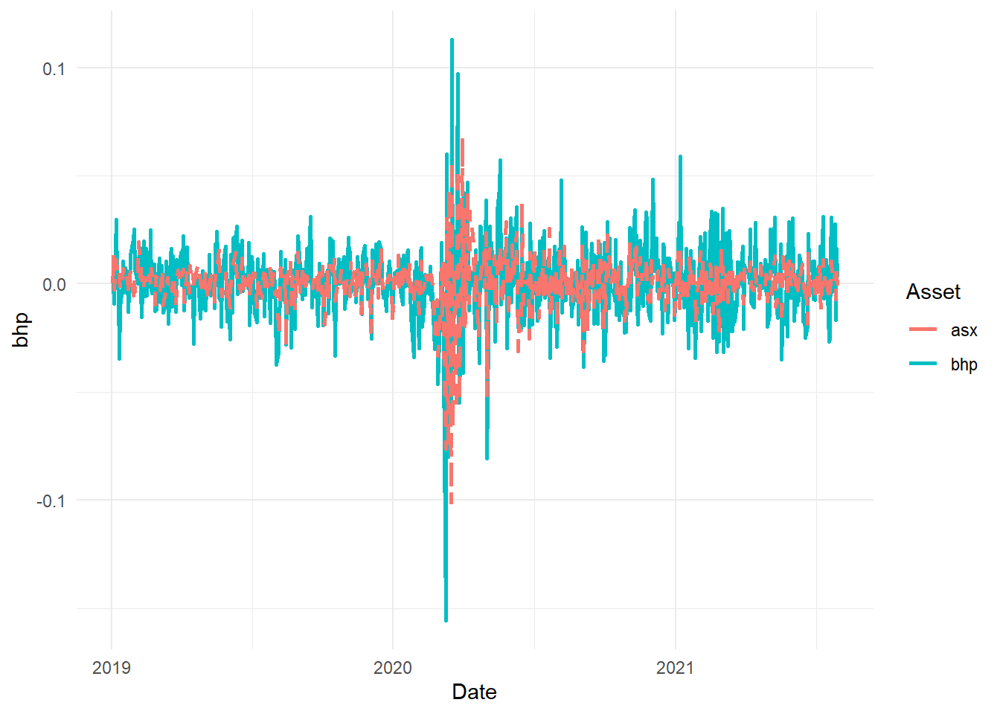
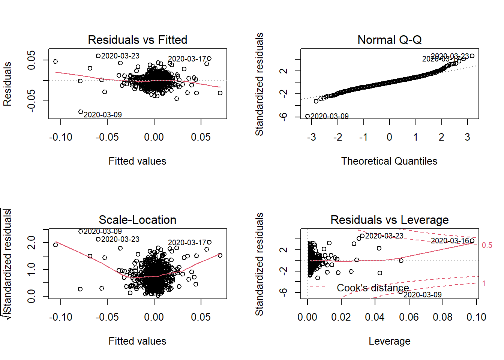

Part II
Topic 7 Linear Regression
 Introduction
Introduction
Regression analysis is one of the most widely used tool in quantitative research which is used to analyse the relationship between variables.
One or more variables are considered to be explanatory variables, and the other is considered to be the dependent variable.
In general linear regression is used to predict a continuous dependent variable (regressand) from a number of independent variables (regressors) assuming that the relationship between the dependent and independent variables is linear.
If we have a dependent (or response) variable Y which is related to a predictor variables \(X_{i}\). The simple regression model is given by
\[\begin{equation} Y=\alpha+\beta X_{i}+\epsilon_{i} \tag{7.1} \end{equation}\]
R has the function \(\mathtt{lm}\) (linear model) for linear regression.
The main arguments to the function \(\mathtt{lm}\) are a formula and the data. \(\mathtt{lm}\) takes the defining model input as a formula
A formula object is also used in other statistical function like \(\mathtt{glm,\,nls,\,rq}\) etc, which is from a formula class.
7.1 Investment \(\beta\) using R (Single Index Model)
The ‘market model’ regression can be represented as the following regression.
\[\begin{equation} R_{i}=\alpha+\beta_{i}R_{M}+\epsilon \tag{7.2} \end{equation}\]
7.2 Data preprocessing
Download stock data using R’s quantmod package
Convert data to returns
Generate some descriptive statistics
Some plots
Data
# Run the following to download and save the data, this should be
# done once and when updating the time period
library(quantmod)
library(pander)
library(xts)
library(TTR)
# download stock
BHP = getSymbols("BHP.AX", from = "2019-01-01", to = "2021-07-31", auto.assign = FALSE)
# download index
ASX = getSymbols("^AXJO", from = "2019-01-01", to = "2021-07-31", auto.assign = FALSE)
# save both in rds (to be used in the TA chapter)
saveRDS(BHP, file = "data/bhp_prices.rds")
saveRDS(ASX, file = "data/asx200.rds")- Convert to returns
library(quantmod)
library(pander)
library(xts)
library(TTR)
# load data from the saved files (not required if we execute the
# chunk above)
BHP = readRDS("data/bhp_prices.rds")
ASX = readRDS("data/asx200.rds")
# using close prices
bhp2 = BHP$BHP.AX.Close
asx2 = ASX$AXJO.Close
# covert to returns
bhp_ret = dailyReturn(bhp2, type = "log")
asx_ret = dailyReturn(asx2, type = "log")
# merge the two with 'inner' join to get the same dates
data_lm1 = merge.xts(bhp_ret, asx_ret, join = "inner")
# convert to data frame
data_lm2 = data.frame(index(data_lm1), data_lm1$daily.returns, data_lm1$daily.returns.1)
# change column names
colnames(data_lm2) = c("Date", "bhp", "asx")
head(data_lm2) #there are row names which can be removed if required Date bhp asx
2019-01-02 2019-01-02 0.000000000 0.000000000
2019-01-03 2019-01-03 0.000000000 0.013510839
2019-01-04 2019-01-04 -0.008947241 -0.002488271
2019-01-07 2019-01-07 0.029808847 0.011289609
2019-01-08 2019-01-08 0.001162482 0.006873792
2019-01-09 2019-01-09 -0.003782952 0.009721207library(pastecs)
desc_stat1 = stat.desc(data_lm2[, 2:3], norm = TRUE)
pander(desc_stat1, caption = "Descriptive Statistics", split.table = Inf)| bhp | asx | |
|---|---|---|
| nbr.val | 653 | 653 |
| nbr.null | 9 | 1 |
| nbr.na | 0 | 0 |
| min | -0.1557 | -0.102 |
| max | 0.1128 | 0.06766 |
| range | 0.2685 | 0.1697 |
| sum | 0.4948 | 0.2853 |
| median | 0 | 0.001163 |
| mean | 0.0007577 | 0.0004369 |
| SE.mean | 0.0007444 | 0.0005075 |
| CI.mean.0.95 | 0.001462 | 0.0009966 |
| var | 0.0003618 | 0.0001682 |
| std.dev | 0.01902 | 0.01297 |
| coef.var | 25.1 | 29.69 |
| skewness | -0.4883 | -1.443 |
| skew.2SE | -2.553 | -7.546 |
| kurtosis | 9.991 | 13.32 |
| kurt.2SE | 26.16 | 34.86 |
| normtest.W | 0.9198 | 0.8266 |
| normtest.p | 3.885e-18 | 5.497e-26 |
7.3 Visualisation
library(ggplot2)
library(tidyr)
p1 = ggplot(data_lm2, aes(asx, bhp))
p1 + geom_point(colour = "brown") + geom_smooth(method = "lm") + theme_minimal() +
labs(title = "Scatter plot of BHPvsASX and Linear Fit")
p2 = ggplot(data_lm2, aes(Date))
p2 + geom_line(aes(y = bhp, color = "bhp"), size = 1, lty = 1) + geom_line(aes(y = asx,
color = "asx"), size = 1, lty = 2) + scale_color_discrete("Asset") +
theme_minimal() + labs("Line Chart of Returns")
7.4 Regression analysis using lm
- Use lm to model the SIM
lreg1 = lm(formula = bhp ~ asx, data = data_lm2)
summary(lreg1) #to generate main results
Call:
lm(formula = bhp ~ asx, data = data_lm2)
Residuals:
Min 1Q Median 3Q Max
-0.077007 -0.008153 -0.000162 0.007500 0.060409
Coefficients:
Estimate Std. Error t value Pr(>|t|)
(Intercept) 0.0003046 0.0005270 0.578 0.564
asx 1.0372279 0.0406422 25.521 <2e-16 ***
---
Signif. codes: 0 '***' 0.001 '**' 0.01 '*' 0.05 '.' 0.1 ' ' 1
Residual standard error: 0.01346 on 651 degrees of freedom
Multiple R-squared: 0.5001, Adjusted R-squared: 0.4994
F-statistic: 651.3 on 1 and 651 DF, p-value: < 2.2e-16pander(lreg1, add.significance.stars = T) #to tabulate| Estimate | Std. Error | t value | Pr(>|t|) | ||
|---|---|---|---|---|---|
| (Intercept) | 0.0003046 | 0.000527 | 0.5779 | 0.5635 | |
| asx | 1.037 | 0.04064 | 25.52 | 4.215e-100 | * * * |
- Using stargazer to print the output
library(stargazer)
stargazer(lreg1, type = "html", title = "Regression Results")| Dependent variable: | |
| bhp | |
| asx | 1.037*** |
| (0.041) | |
| Constant | 0.0003 |
| (0.001) | |
| Observations | 653 |
| R2 | 0.500 |
| Adjusted R2 | 0.499 |
| Residual Std. Error | 0.013 (df = 651) |
| F Statistic | 651.320*** (df = 1; 651) |
| Note: | p<0.1; p<0.05; p<0.01 |
- Diagnostic Plots
par(mfrow = c(2, 2))
plot(lreg1)
Topic 8 Multiple Regression
- Multiple regression extends simple linear regression with more than one (1) predictor variables
- We have one response variable and multiple independent predictor variable.
\[\begin{equation} y_{i}=\alpha+\beta_{1}x_{1}+\beta_{2}x_{2}+\ldots+\varepsilon_{i} \tag{8.1} \end{equation}\]
- The estimation process is similar to the univariate case where the additional predictors are added with
+operator - A multifactor example demonstrates in the next section
8.1 Fama-French Three Factor Model
Fama and French (1992);Fama and French (1993) extended the basic CAPM to include size and book-to-market effects as explanatory factors in explaining the cross-section of stock returns.
SMB (Small minus Big) gives the size premium which is the additional return received by investors from investing in companies having a low market capitalization.
HML (High minus Low), gives the value premium which is the return provided to investors for investing in companies having high book-to-market values.
The three factor Fama-French model is written as:
\[\begin{equation} r_{A}-r_{F}=+\beta_{A}(r_{M}-r_{F})+s_{A}SMB+h_{A}HML+\alpha+e \#eq:ff1) \end{equation}\]
Where \(s_{A}\) and \(h_{A}\) capture the security’s sensitivity to these two additional factors.
8.1.1 Data Preprocessing
- The three factors daily data is downloaded as a CSV file from the Kenneth French website. Link: https://mba.tuck.dartmouth.edu/pages/faculty/ken.french/data_library.html
- AAPL stock prices are downloaded using the quantmod package
- The following code snippets will pre-process three factor data and stock return data and then combine it in one single
# use read.table for text file
ff_data = read.csv("data/F-F_Research_Data_Factors_daily.CSV", skip = 3)
ff_data = na.omit(ff_data) #remove missing values
head(ff_data) #date is missing column names X Mkt.RF SMB HML RF
1 19260701 0.10 -0.23 -0.28 0.009
2 19260702 0.45 -0.34 -0.03 0.009
3 19260706 0.17 0.29 -0.38 0.009
4 19260707 0.09 -0.59 0.00 0.009
5 19260708 0.21 -0.38 0.18 0.009
6 19260709 -0.71 0.44 0.58 0.009colnames(ff_data)[1] = "Date"
# convert dates in R date format
ff_data$Date = as.Date(strptime(ff_data$Date, format = "%Y%m%d"))
head(ff_data) Date Mkt.RF SMB HML RF
1 1926-07-01 0.10 -0.23 -0.28 0.009
2 1926-07-02 0.45 -0.34 -0.03 0.009
3 1926-07-06 0.17 0.29 -0.38 0.009
4 1926-07-07 0.09 -0.59 0.00 0.009
5 1926-07-08 0.21 -0.38 0.18 0.009
6 1926-07-09 -0.71 0.44 0.58 0.009- Download the data and convert to returns
d_aapl = getSymbols("AAPL", from = "2019-01-01", to = "2021-09-30", auto.assign = F)
# select closing prices and covert to log returns
aapl = d_aapl$AAPL.Close
aapl_ret = dailyReturn(aapl, type = "log")
# convert to data frame
aapl_ret2 = fortify.zoo(aapl_ret) #Dates column will be named Index
# rename
colnames(aapl_ret2) = c("Date", "AAPL")
# use merge (can use left_join from dplyr as well) to combine the
# stock returns and factor data
data_ffex = merge(aapl_ret2, ff_data, by = "Date")8.1.2 Regression Analysis
- The Fama-French regression uses excess returns so first convert Apple returns to excess returns and then fit the model using the
lmfunction
# create another column with AAPL-RF
data_ffex$AAPL.Rf = data_ffex$AAPL - data_ffex$RF
ff_lreg = lm(AAPL.Rf ~ Mkt.RF + SMB + HML, data = data_ffex)- A plot function can be used to plot the four regression plots similar to simple regression.
par(mfrow = c(2, 2))
plot(ff_lreg)Figure 8.1: Linear Regression Plots
- There are packages in R which provide functions to export the summary output of a regression model in a LaTeX, HTML or ASCII files.
- The output can also be exported to an HTML or LaTeX file which can be later used in a word/LaTeX document.
stargazer(ff_lreg, summary = T, title = "Fama-French Regression OLS", type = "html")| Dependent variable: | |
| AAPL.Rf | |
| Mkt.RF | 0.013*** |
| (0.0003) | |
| SMB | -0.003*** |
| (0.001) | |
| HML | -0.004*** |
| (0.0004) | |
| Constant | -0.003*** |
| (0.0005) | |
| Observations | 692 |
| R2 | 0.677 |
| Adjusted R2 | 0.676 |
| Residual Std. Error | 0.013 (df = 688) |
| F Statistic | 481.374*** (df = 3; 688) |
| Note: | p<0.1; p<0.05; p<0.01 |
8.1.3 Visualisation
- The ggeffects package provides good functionality on visualising the marginal effects and adjusted predictions. The predictions generated by a model by varying one independent variable and keeping the others constant.
- The following example visualises the predictions based on the SMB factor
library(ggeffects)
mydf = ggpredict(ff_lreg, terms = c("SMB"))
(p_ff = plot(mydf) + geom_point(data = data_ffex, aes(x = SMB, y = AAPL.Rf),
color = "darkblue"))Figure 8.2: Marginal Effect
Topic 9 Panel Regression
- Panel data or longitudinal data is a data structure which contains individuals/variables (e.g., persons, firms, countries, cities etc) observed at several points in time (days, months, years, quarters etc).
- The dataset
GDP_l.RDatais an example of panel data where each country’s GDP is recorded over several years in time.
load("data/GDP_l.RData")
# data snapshot
GDP_l[c(1:5, 25:29, 241:245), ] Year Country GDP
1 1990 Australia 18247.3946
2 1991 Australia 18837.1893
3 1992 Australia 18599.0012
4 1993 Australia 17658.0794
5 1994 Australia 18080.6975
25 1990 China 314.4310
26 1991 China 329.7491
27 1992 China 362.8081
28 1993 China 373.8003
29 1994 China 469.2128
241 1990 World 4220.6460
242 1991 World 4357.3096
243 1992 World 4591.0928
244 1993 World 4604.2533
245 1994 World 4882.0794Some visualisation
Line Chart
library(ggplot2)
p1 = ggplot(GDP_l, aes(Year, GDP, group = Country))
p1 + geom_path(aes(color = Country)) + theme_minimal() + theme(legend.position = "top")Figure 9.1: Panel Data Line Chart
- Bar Chart
p1 + geom_col(aes(fill = Country)) + theme_minimal() + theme(legend.position = "top")Figure 9.2: Panel Data Bar Chart
- Bar Chart for each country
p1 + geom_col(aes(fill = Country)) + facet_grid(Country ~ .) + theme_minimal() +
theme(legend.position = "top")Figure 9.3: Panel Data Bar Chart
- Box plot
p2 = ggplot(GDP_l, aes(Country, GDP))
p2 + geom_boxplot(aes(fill = Country)) + theme_minimal() + theme(legend.position = "top")Figure 9.4: Panel Data Box Plot
The GDP data here has a balanced panel structure, where all the variables have values for all points in time.
This chapter discussed the two basic panel regression models viz, Fixed Effect Model and Random Effect Model for balanced panel data.
For an extensive discussion see econometrics textbooks including Baltagi (2005),Wooldridge (2010),Greene (2008) and Stock and Watson (2012).
The package plm Croissant and Millo (2008) provides methods for calculating these models, which will be used for in illustrative code.
We will use the very popular Grunfeld panel dataset Grunfeld (1958) available in the plm package for demostration which are based on similar examples in Croissant and Millo (2008) and Kleiber and Zeileis (2008).
9.1 Fixed and Random effects using the plm package
The argument in is set to for fixed effects model and for a random effects model.
The data can be converted to the required panel format using function, which transforms a regular data frame object into a panel data structure.
is the main argument in the function which specifies the panel structure, i.e, columns with individual and time variables.
# Grunfeld Data representation as per pdata.frame function
library(plm)
data(Grunfeld) #load data
head(Grunfeld) #data snapshot firm year inv value capital
1 1 1935 317.6 3078.5 2.8
2 1 1936 391.8 4661.7 52.6
3 1 1937 410.6 5387.1 156.9
4 1 1938 257.7 2792.2 209.2
5 1 1939 330.8 4313.2 203.4
6 1 1940 461.2 4643.9 207.2pdata1 = pdata.frame(Grunfeld, index = c("firm", "year"))
head(pdata1) firm year inv value capital
1-1935 1 1935 317.6 3078.5 2.8
1-1936 1 1936 391.8 4661.7 52.6
1-1937 1 1937 410.6 5387.1 156.9
1-1938 1 1938 257.7 2792.2 209.2
1-1939 1 1939 330.8 4313.2 203.4
1-1940 1 1940 461.2 4643.9 207.29.2 Fixed Effects Model
- We can use the plm package to replicate the following investment equation as considered by Grunfeld (Grunfeld, 1958).
\[\begin{equation} I_{it}=\alpha+\beta_{1}F_{it}+\beta_{2}C_{it}+\varepsilon_{it} \tag{9.1} \end{equation}\]
The model in equation-1 is a one-way panel regression model which attempts to quantify the dependence of real gross investment (\(I_{it}\)) on the real value of the company (\(F_{it}\)) and real value of its capital stock (\(C_{it}\)).
- Grunfeld (1958) studied 10 large manufacturing firms from the United States over 20 years (1935-954). A fixed effect estimation can be obtained with the following code
# using plm with 'within' estimator for fixed effects
fe1 = plm(inv ~ value + capital, data = pdata1, model = "within")
# the output can be summarised with summary
summary(fe1)Oneway (individual) effect Within Model
Call:
plm(formula = inv ~ value + capital, data = pdata1, model = "within")
Balanced Panel: n = 10, T = 20, N = 200
Residuals:
Min. 1st Qu. Median 3rd Qu. Max.
-184.00857 -17.64316 0.56337 19.19222 250.70974
Coefficients:
Estimate Std. Error t-value Pr(>|t|)
value 0.110124 0.011857 9.2879 < 2.2e-16 ***
capital 0.310065 0.017355 17.8666 < 2.2e-16 ***
---
Signif. codes: 0 '***' 0.001 '**' 0.01 '*' 0.05 '.' 0.1 ' ' 1
Total Sum of Squares: 2244400
Residual Sum of Squares: 523480
R-Squared: 0.76676
Adj. R-Squared: 0.75311
F-statistic: 309.014 on 2 and 188 DF, p-value: < 2.22e-16The summary output for the fitted model object gives details about the fitted object.
The individual fixed effects can be obtained using the function , a summary method is also available as shown next
# individual fixed effects
fixef(fe1) 1 2 3 4 5 6 7 8
-70.2967 101.9058 -235.5718 -27.8093 -114.6168 -23.1613 -66.5535 -57.5457
9 10
-87.2223 -6.5678 # summary
summary(fixef(fe1)) Estimate Std. Error t-value Pr(>|t|)
1 -70.2967 49.7080 -1.4142 0.15896
2 101.9058 24.9383 4.0863 6.485e-05 ***
3 -235.5718 24.4316 -9.6421 < 2.2e-16 ***
4 -27.8093 14.0778 -1.9754 0.04969 *
5 -114.6168 14.1654 -8.0913 7.141e-14 ***
6 -23.1613 12.6687 -1.8282 0.06910 .
7 -66.5535 12.8430 -5.1821 5.629e-07 ***
8 -57.5457 13.9931 -4.1124 5.848e-05 ***
9 -87.2223 12.8919 -6.7657 1.635e-10 ***
10 -6.5678 11.8269 -0.5553 0.57933
---
Signif. codes: 0 '***' 0.001 '**' 0.01 '*' 0.05 '.' 0.1 ' ' 19.3 Random Effects Model
A random effect model can be estimated by setting the argument to .
There are five different methods available for estimation of the variance component (Baltagi (2005)) which can be selected using the argument.
• The following output is obtained using the default Swamy-Arora (Swamy and Arora (1972)) random method.
# random effect model
re1 = plm(inv ~ value + capital, data = pdata1, model = "random")
# summary
summary(re1)Oneway (individual) effect Random Effect Model
(Swamy-Arora's transformation)
Call:
plm(formula = inv ~ value + capital, data = pdata1, model = "random")
Balanced Panel: n = 10, T = 20, N = 200
Effects:
var std.dev share
idiosyncratic 2784.46 52.77 0.282
individual 7089.80 84.20 0.718
theta: 0.8612
Residuals:
Min. 1st Qu. Median 3rd Qu. Max.
-177.6063 -19.7350 4.6851 19.5105 252.8743
Coefficients:
Estimate Std. Error z-value Pr(>|z|)
(Intercept) -57.834415 28.898935 -2.0013 0.04536 *
value 0.109781 0.010493 10.4627 < 2e-16 ***
capital 0.308113 0.017180 17.9339 < 2e-16 ***
---
Signif. codes: 0 '***' 0.001 '**' 0.01 '*' 0.05 '.' 0.1 ' ' 1
Total Sum of Squares: 2381400
Residual Sum of Squares: 548900
R-Squared: 0.7695
Adj. R-Squared: 0.76716
Chisq: 657.674 on 2 DF, p-value: < 2.22e-169.4 Testing
9.4.1 Panel or OLS
It is important to test if the panel regression model is signficantly different from the OLS model. In other words, do we need a panel model or OLS model is good enough?
The function in the plm package can be used to test a fitted fixed effect model against a fitted OLS model to check which regression is a better choice.
# Simple OLS (without the intercept) using pooling
ols1 = plm(inv ~ value + capital - 1, data = pdata1, model = "pooling")
# summary of results
summary(ols1)Pooling Model
Call:
plm(formula = inv ~ value + capital - 1, data = pdata1, model = "pooling")
Balanced Panel: n = 10, T = 20, N = 200
Residuals:
Min. 1st Qu. Median Mean 3rd Qu. Max.
-270.32 -51.32 -23.69 -21.04 -4.51 476.74
Coefficients:
Estimate Std. Error t-value Pr(>|t|)
value 0.1076384 0.0058256 18.4769 < 2.2e-16 ***
capital 0.1832062 0.0242750 7.5471 1.587e-12 ***
---
Signif. codes: 0 '***' 0.001 '**' 0.01 '*' 0.05 '.' 0.1 ' ' 1
Total Sum of Squares: 9359900
Residual Sum of Squares: 1935600
R-Squared: 0.8113
Adj. R-Squared: 0.81035
F-statistic: 597.659 on 2 and 198 DF, p-value: < 2.22e-16- The above OLS model can now be tested against the fixed effect model to check for the best fit.
# Testing for the better model, null: OLS is a better
pFtest(fe1, ols1)
F test for individual effects
data: inv ~ value + capital
F = 50.714, df1 = 10, df2 = 188, p-value < 2.2e-16
alternative hypothesis: significant effects- Similar to the fixed effect and OLS comparison one can also check if the random effects are needed using one of the available Langrange multiplier tests (Breusch and Pagan (1980) test here) test in function as illustrated below
# plmtest using the Breuch-Pagan method
plmtest(ols1, type = c("bp"))
Lagrange Multiplier Test - (Breusch-Pagan) for balanced panels
data: inv ~ value + capital - 1
chisq = 727.84, df = 1, p-value < 2.2e-16
alternative hypothesis: significant effects- A p-value<0.05 in the above test indicates that the Random Effect model is required.
9.4.2 Fixed Effect or Random Effect
- The Hausman test (Hausman (1978)) is the standard approach to test for model specification which can be computed using the function in the plm package.
# phtest using the fitted models in fe1 and re1
phtest(fe1, re1)
Hausman Test
data: inv ~ value + capital
chisq = 2.3304, df = 2, p-value = 0.3119
alternative hypothesis: one model is inconsistent- A p-value<0.05 suggests that the fixed effect model is appropriate so in this case the random effect model should be used.